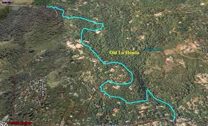

Week 2: OLH
10 Oct 2009
|
2009 Low-Key Hillclimbs Week 2: OLH 10 Oct 2009 |
|  |
| Aerial photo of OLH, courtesy of Stanford Cycling |
OLH. So classic we need not even mention it by name. It's the benchmark climb of the Peninsula. How good a climber are you? Well, Low-Key score is a good indicator, but for many, it's your time right here. From the bridge to the stop sign, everyone knows their number. Watts per kilogram? Too abstract. VO2-max? Too theoretical. This is the real deal. This is what counts.
Here's your chance to put a stake in the ground: set your number, meet your goal, maybe even enjoying the scenery as you wind through the redwoods.
The center section was repaved in October 2008, and conditions are as good as ever to lay down a fast one. So eat right, get a good warm-up, strip off the all extra weight from your bike, put on the race tires and show up this morning for a great chance to test your end-of-season fitness. No excuses.
Our insurance demands it: helmets are required. Sorry kids, no exceptions!
USA Cycling rules do not allow ear plugs. We don't think it's a good idea either. So for safety sake, please leave both ears open during all Low-Key events!
Trailers pulling boom boxes are fine, however.
We'll meet at the Windy Hill parking area off Portola Valley Road. There may be some parking at the lot, but we recommend parking elsewhere, for example in Woodside, then riding to the registration area. From Windy Hill, we'll send small groups to the base of Old La Honda, from which we'll start groups of 10 or less to avoid impacting local traffic. Registration opens at 9:15am, closing at 10am. Please don't go to Old La Honda directly; we want groups to all start at Windy Hill. Faster riders will start in earlier groups, more endurance-oriented riders in later groups.
Check here for a map to the starting area.
| stats | 3.35 miles, 1290 feet, 7.3% |
| format | small groups |
| time | reg 9:15 - 10:00 start 10:10am |
| coordinator | |
| aerial view | Stanford Cycling |
| route profile | plot of Lucas Pereira's data Lucas Pereira's profile |
| weather | Weather Underground Weather Bonk |
| registration form |
PDF release form |
| entry fee | $10 voluntary donation free for juniors 2 free for volunteers free for coordinators |

{kind=link}
{kind=link}